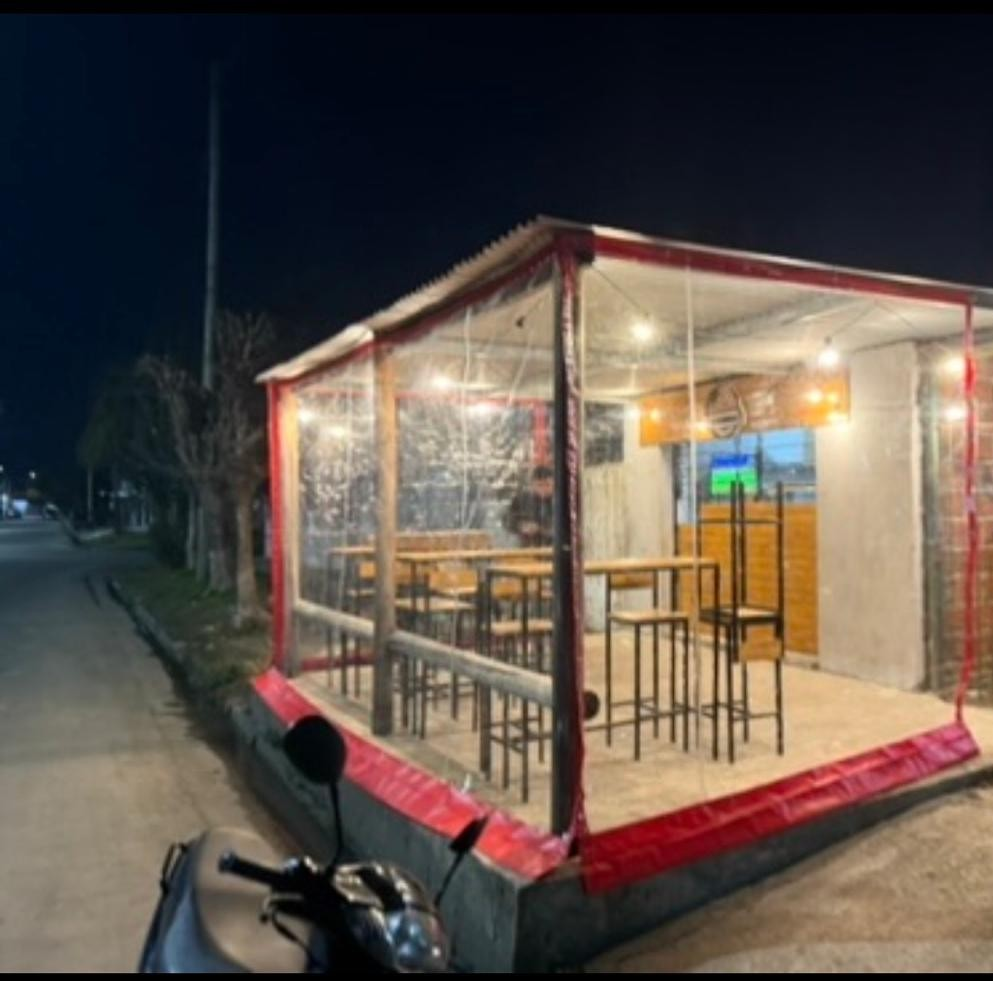
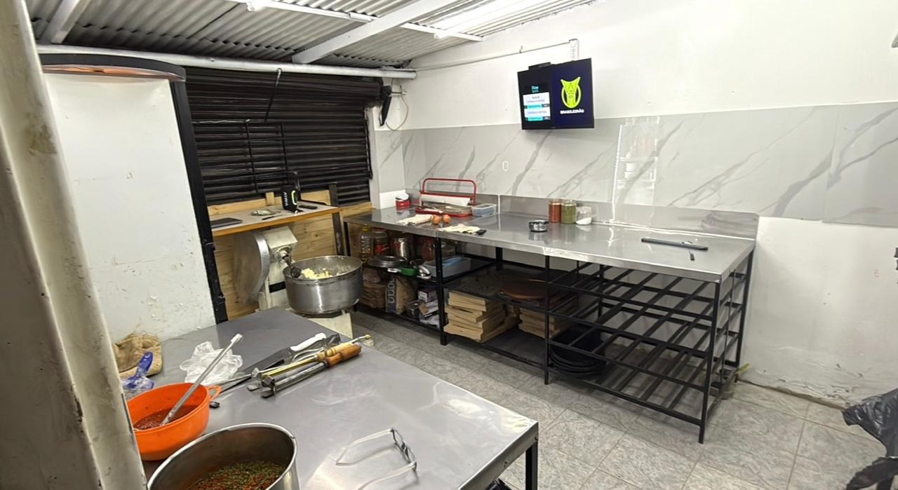
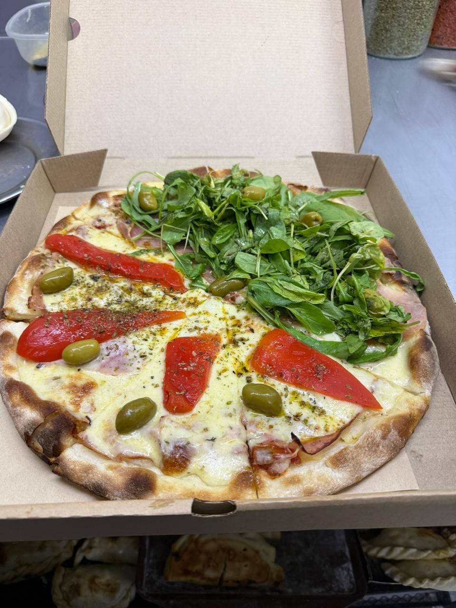
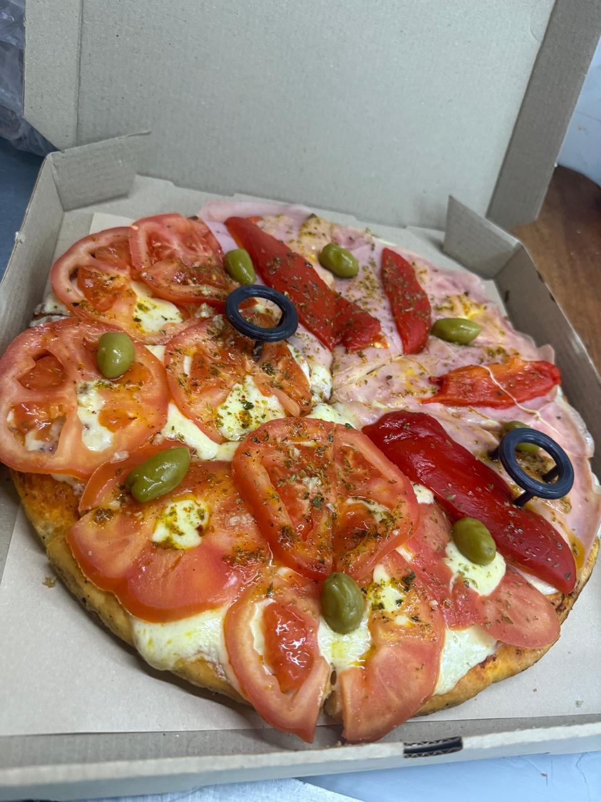
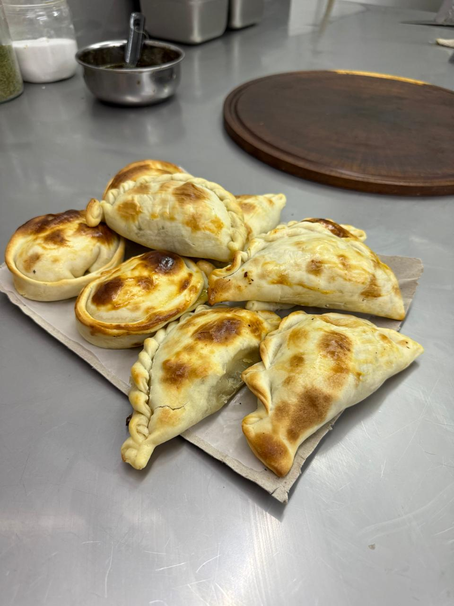

Muzzarella, napolitana y todo lo bueno de Lanús Oeste. Buena mercadería, precio amigable, y la garantía de que el dueño está siempre atrás del mostrador.

Donchichopizza nació en 2023 en Lanús Oeste, con una idea simple: que cada cliente se lleve un buen producto sin pagar de más. Nada de vueltas ni de recetas raras — mercadería de primera, hecha con las manos del dueño, todos los días.
Acá se cocina pizza a la piedra tradicional y también al molde, para el que la prefiere más esponjosa. Y si no es día de pizza, están las empanadas: de carne, de pollo, y de jamón y queso.
Tenemos un rinconcito para sentarse a comer al paso, con alguna bebida bien fresca de acompañamiento. Nada del otro mundo — solo un lugar de barrio, para gente de barrio.

A la piedra, al molde, o de relleno — elegí como te guste.

La receta tradicional, masa fina y bien cocida.

Más esponjosa, para los que la prefieren así.

De carne, de pollo, y de jamón y queso.
Así salen de nuestro horno.
General Villegas 4446, Lanús Oeste, Buenos Aires.
Comé al paso en nuestro rinconcito, o pedí por WhatsApp y lo llevamos hasta tu casa.